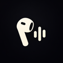

Record on your terms
Connect your AirPods to your iPhone, choose the microphone, and start recording when you’re ready.

SaidmarkA personal voice assistant for AirPods
Record a conversation with your AirPods. Days later, find the words you remember and hear the moment for yourself.
Hear the exampleWhat did I promise Alex?
You promised Alex you’d send the project draft.
Audio could not play. Please try again.
Connect your AirPods to your iPhone, choose the microphone, and start recording when you’re ready.
Search a transcript or ask what was said. Tap a source to hear the original audio in context.
Trim a moment from the recording and save it as a clip you can replay later.
External AI is optional. With your permission, Saidmark can send your question and selected transcript excerpts to the provider you configure.